Demo Bot Detection
1. Demo Scope
This demo is to show the unique Machine Learning based bot detection feature and get yourself comfortable to show to partners and customers.
It requires little setup to illustrate the easy of use.
To reduce ML learning time we will skip sample collecting and model building phases, and move direcly into model running state by importing a pre-learned model.
- Download the pre-learned ML-Bot Model here.
2. Basic Configuration
FortiWeb Machine Learning, both Bot Detection and Anomaly Detection, is a protection mechanism attached to the Server Policy.
Policy Server Finance will be used during this exercise
- Policy > Server Policy > Finance > Machine Learning > Bot Detection
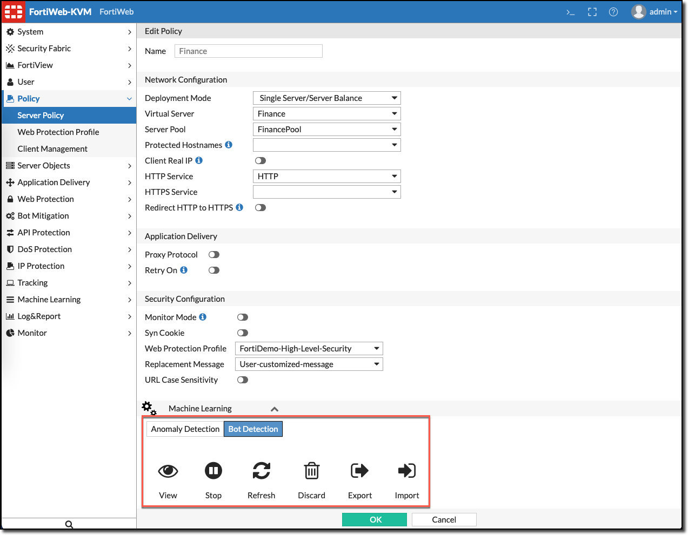
By default Bot-Detection is not enabled and need to be configure like illustrated per instructions 1. and 2.. For this lab exercise it has been partly pre-configured.
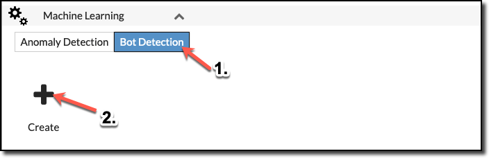
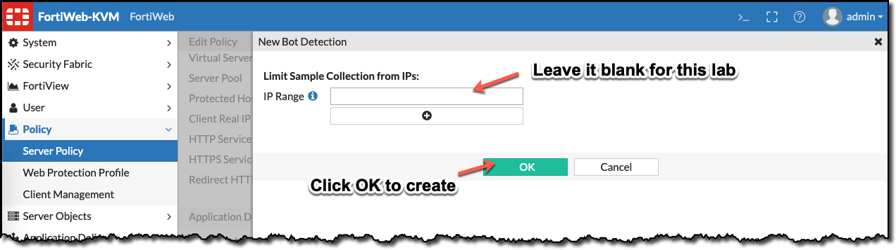
3. Importing ML-Bot Models
To speed-up the configuration we skip the automatic model learning and import the downloaded mathematical model.
- Policy > Server Policy > Finance > Machine Learning > Bot Detection > Import
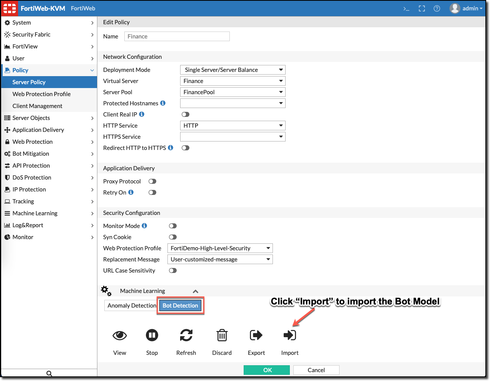
After you hvae successfully imported mathematicel model, you can configure and view the learned model together with a graphical representation.
- Policy > Server Policy > Finance > Machine Learning > Bot Detection > View
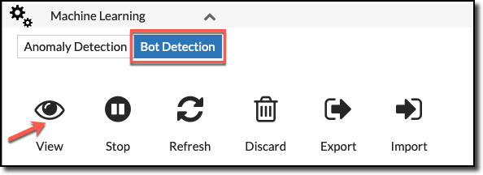
- Finish the configuration by changing the default action from Alert to Period Block. This will block detects BOTs for a period during the demo.

To view the graphical representation of the imported model by selecting the Model Status tab.
- Hover over the line graphs to discover the traffic patterns of the imported model.
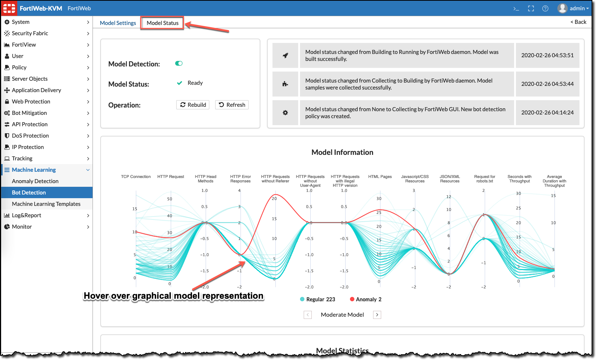
4. Enable Logging
We pre-configured the log settings, so you can observe both legitimate and malicious traffic.
If you are starting from scratch you can enable it with the following steps.
Log&Report > Log Config > Other Log Settings:
- Retain Packet Payload: enable
- Machine Learning: enable

5. Generating & Blocking Bots
Access the bWAPP web application to verify proper webservices.
- Open browser on Lubuntu Client and browse to http://finance.fortinet.demo/bWAPP/
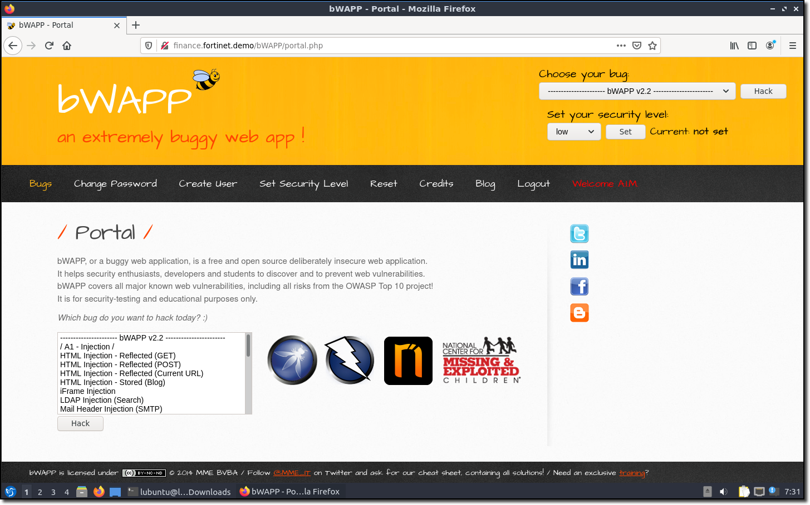
Next step is to generate bot traffic. Observe the traffic log and ML-Bot detection period blocking in action.
Login from your computer with your local ssh client into Lubuntu ssh -p 10100 lubuntu@<FORTIPOC-IP> (credentials: lubuntu/fortinet), or open an QTerminal via the Start > System Tools > QTerminal.
Welcome to Ubuntu 20.04 LTS (GNU/Linux 5.4.0-26-generic x86_64)
* Documentation: https://help.ubuntu.com
* Management: https://landscape.canonical.com
* Support: https://ubuntu.com/advantage
The programs included with the Ubuntu system are free software;
the exact distribution terms for each program are described in the
individual files in /usr/share/doc/*/copyright.
Ubuntu comes with ABSOLUTELY NO WARRANTY, to the extent permitted by
applicable law.
- Execture shell script bot-simulator to launch the bot attack.
./bot-simulator.sh
This will launch 5 bots sending traffic from random IP-addresses towards the bWAPP application.
During the period that bot traffic is generated you can periodically browse the bWAPP application to verify bwAPP application availability.
--------------------------------------------------------------------------
FortiWeb Machine Learning - Bot Detection Bot simulator
--------------------------------------------------------------------------
Bot launched from: 163.197.140.244
Bot launched from: 191.254.117.72
Bot launched from: 49.174.143.26
Bot launched from: 138.57.125.248
Bot launched from: 27.4.103.138
Wait until BOTs reports to have stopped after 200 crawls
Observe on the FortiWeb dashboard you will clearly see the resouce impact:
- High CPU load
- Bandwidth consumption
- Concurrent Connections/Sec on the Finance application
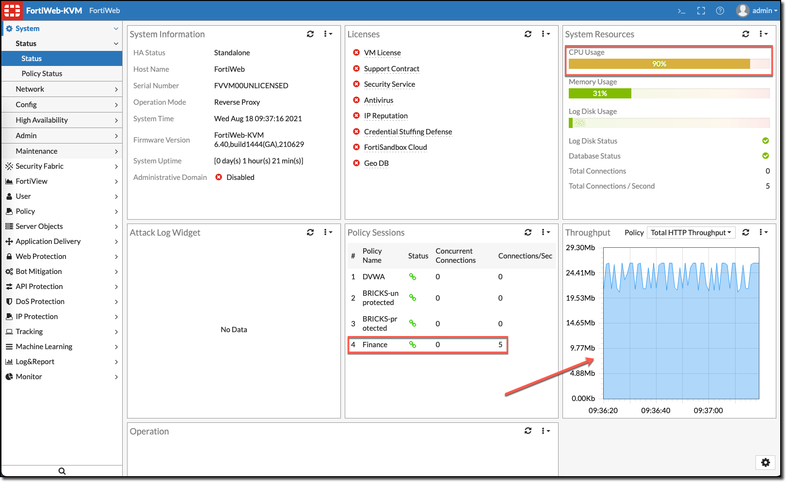
Observe on Log&Report > Log Access > Traffic that bot traffic reaches the bWAPP application.
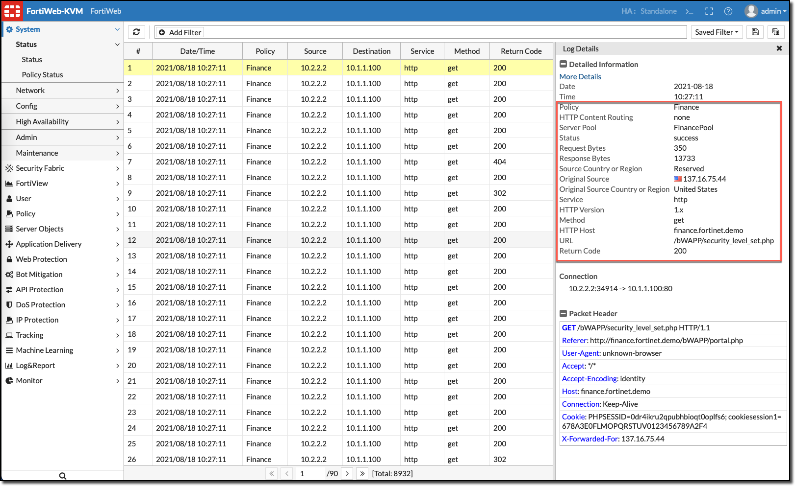
After one minute approximately FortiWeb ML-Bot Detection will start blocking the bot traffic.
- Observe the change in resouce usage on the FortiWeb dashboard while the script is running. When the Bots are blocked, with period block due to failing Real Broweser Enforcement, the pressure on FortiWeb resources will decrease.
--------------------------------------------------------------------------
FortiWeb Machine Learning - Bot Detection Bot simulator
--------------------------------------------------------------------------
Bot launched from: 163.197.140.244
Bot launched from: 191.254.117.72
Bot launched from: 49.174.143.26
Bot launched from: 138.57.125.248
Bot launched from: 27.4.103.138
Wait until BOTs reports to have stopped after 200 crawls
Bot 163.197.140.244 blocked
Bot 163.197.140.244 blocked
Bot 163.197.140.244 blocked
Bot 163.197.140.244 blocked
Bot 163.197.140.244 blocked
Bot 163.197.140.244 blocked
Bot 191.254.117.72 blocked
Bot 163.197.140.244 blocked
Bot 49.174.143.26 blocked
Bot 191.254.117.72 blocked
Bot 163.197.140.244 blocked
Bot 49.174.143.26 blocked
Bot 191.254.117.72 blocked
Bot 163.197.140.244 blocked
Bot 49.174.143.26 blocked
Bot 191.254.117.72 blocked
Bot 163.197.140.244 blocked
Bot 49.174.143.26 blocked
Bot 191.254.117.72 blocked
<skip>
Bot 27.4.103.138 blocked
Bot 138.57.125.248 blocked
Bot 27.4.103.138 blocked
Bot 138.57.125.248 blocked
Bot 27.4.103.138 blocked
Bot 138.57.125.248 blocked
Bot 27.4.103.138 blocked
Bot 138.57.125.248 blocked
Bot 27.4.103.138 blocked
Bot 138.57.125.248 blocked
Bot stopped from : 163.197.140.244
Bot stopped from : 191.254.117.72
Bot stopped from : 49.174.143.26
Bot stopped from : 138.57.125.248
Bot stopped from : 27.4.103.138
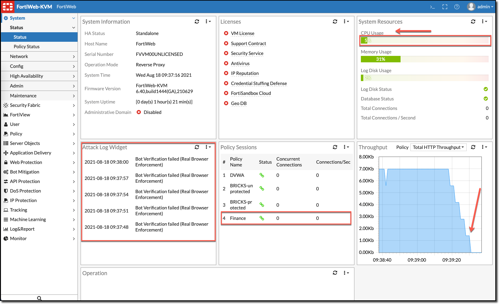
6. Observing Blocked Bots
Blocked bots are listed in the Dashboard > FortiView section under Blocked IP monitoring section (add it first with + icon) and Attack Log.
Feel free to release one or two bots and observe that those are not blocked anymore.
6.1 Monitor Blocked IP
There is an option to manually release the blocked IP.
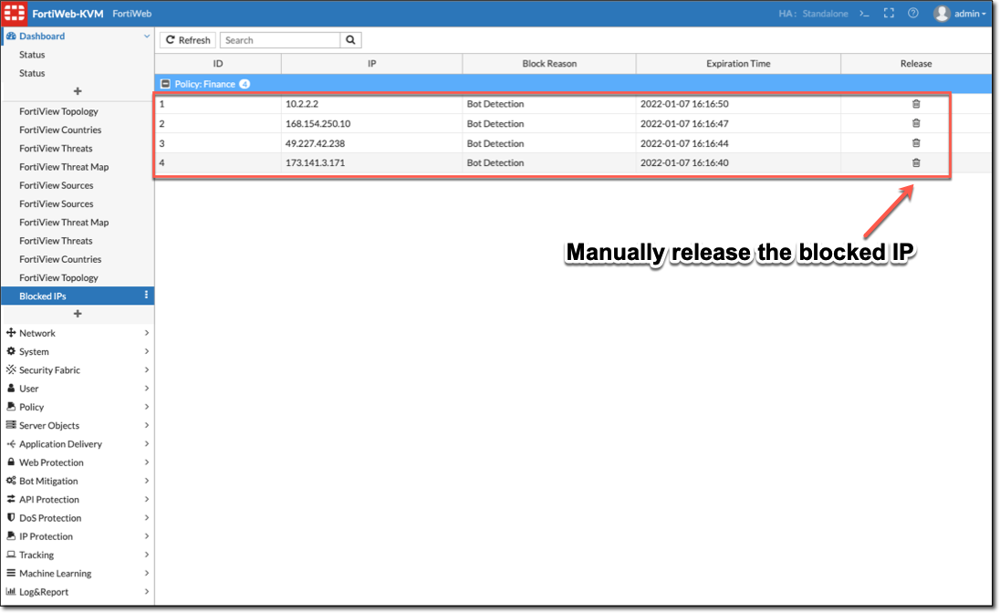
6.2 Attack Logs
FortiWeb Attack Log shows the blocked bots triggered by Machine Learning - Bot Detection performing Bot Verification with Real Browser Validation.
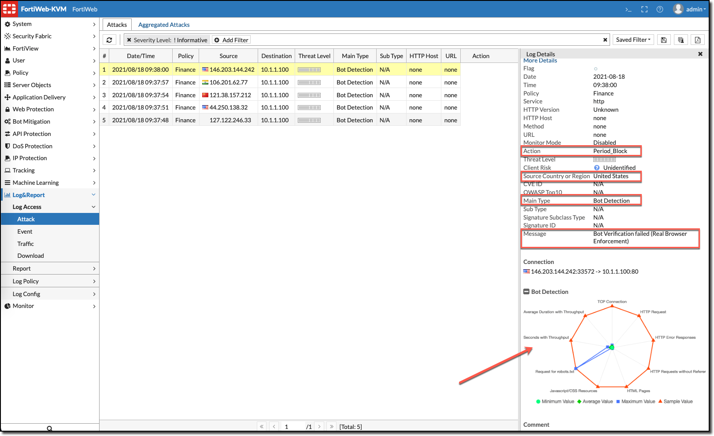
6.3 FortiView
Navigate through the FortiView menu to discover bot logging, especially the Security Threat map.
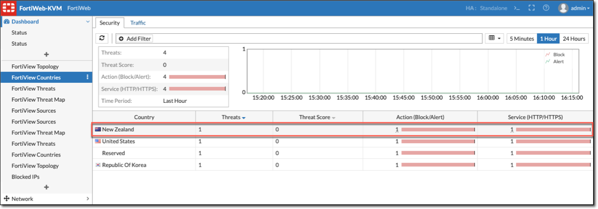
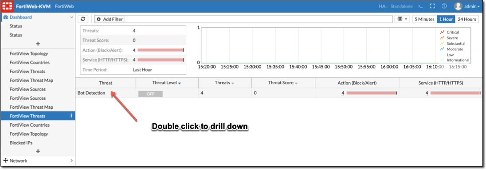
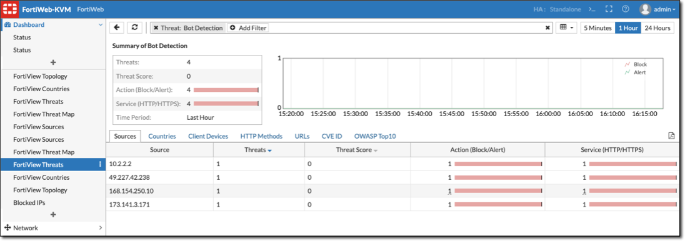
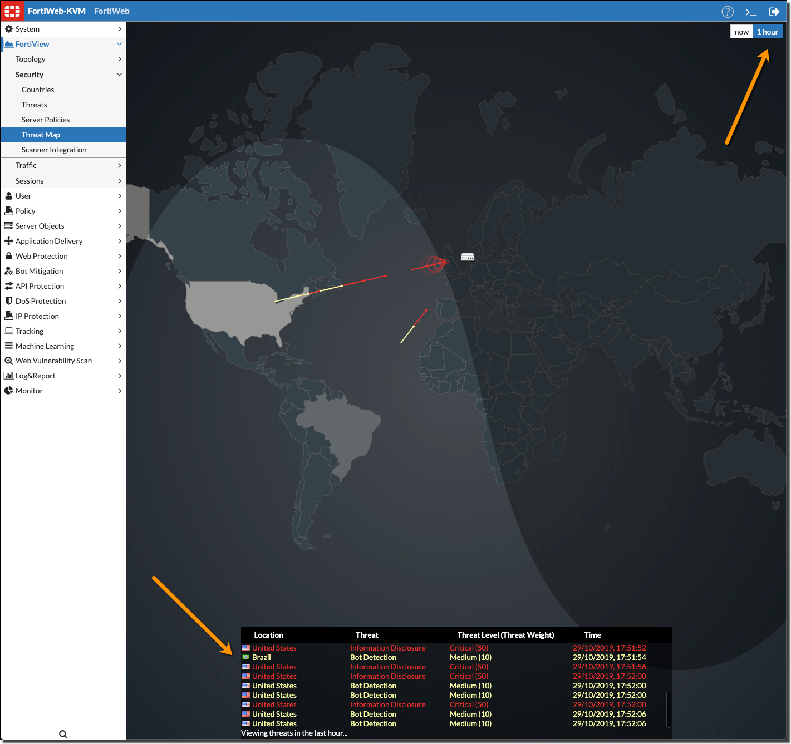